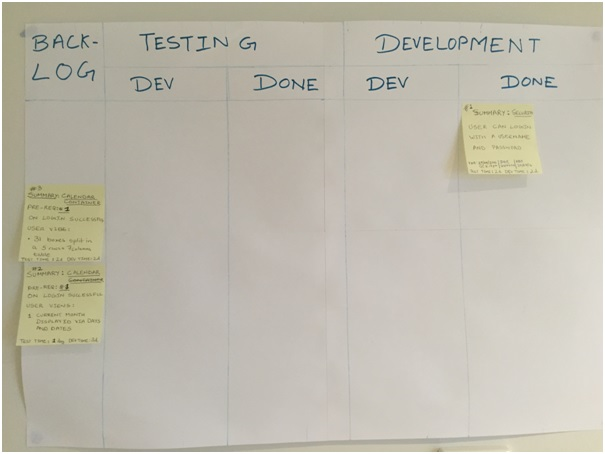
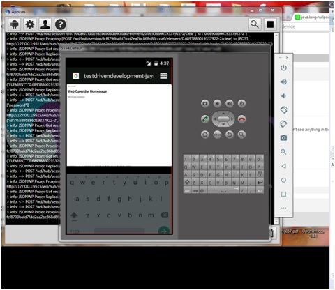

Table of Contents
1. PURPOSE
2. WHAT THIS APPLICATION DOES
3. WHY IS IT IMPORTANT
4. TEST DRIVEN DEVELOPMENT (TDD) PERFORMED WITH RUBY PROGRAMMING LANGUAGE
5. TDD ON MOBILE PLATFORM
1. PURPOSE
To demonstrate "Test Driven Development" (TDD) of a web application on browser and mobile platforms using cucumber, JUnit, Selenium RC and Appium with Eclipse.
The development utilised agile software development as evidenced by the board below:

A one line summary of these tools is as below:
ECLIPSE : A GUI that allows coding and use of following technologies.
CUCUMBER : framework that allows writing code to defined acceptance driven tests.
JUNIT : API that provides functions to test via code. E.G. AssertEquals("a","a") will return true.
SELENIUM RC : API that provides functions to drive html pages. E.G. browser.findelement(byID("submit")).click() would click submit button.
APPIUM : An application server like TOMCAT for mobiles. It hosts mobile devices (iOS and Android), so tests can be run on them.
2. WHAT THIS WEB APPLICATION DOES
This application is about setting up an online web calendar. What you see here, is one user story from sprint 1, for logon, which has been fully implemented as of <%=new java.util.Date()%>:.
At the moment this application:
1. Takes user input in the form of username and password,
2. On selecting submit button, validates the credentials via checking a MySql database.
3. If the credentails authenticate successfully, it presents a welcome user message.
4. If the credentails do NOT authenticate successfully, it presents a "invalid credentials" welcome message.
3. WHY IS IT IMPORTANT
This application has been developed entirely using test driven development.
The steps followed were to first develop the cucumber scripts to drive selenium tests followed by writing the code. In particular:
PRE-REQUISITE1. ECLIPSE setup with Selenium RC, JUnit and cucumber. 2. For web development using cloud deployment, Eclipse was setup with jBoss Openshift tools, red hat console (rhc) and GIT for configuration management. |
STEP 1Specify Acceptance based test in simple word processor. 
|
STEP 2Using cucumber framework, write code for tests using selenium RC API. NOTE: The text "@Given" in screenshot below is followed by the test steps from STEP 1 
|
STEP 3Develop application to make cucumber tests pass (STEP 1). Progress able to be monitored within seconds, by running the JUnit project. 
|
4. TEST DRIVEN DEVELOPMENT USING RUBY PROGRAMMING LANGUAGE
The same Selenium tests were also written and run using Ruby language on Ruby Mine IDE software
The steps followed were:
PRE-REQUISITE1. Ruby version 2.0.0 installed. 2. Ruby Mine IDE installed. 3. Ruby Gems for RSpec, Capybara, Cucumber, activesupport, selenium-client, selenium-webdriver run. |
STEP 1Specify Acceptance based test in simple word processor. 
|
STEP 2Using cucumber framework, write code for tests using selenium RC API. NOTE: The text "When" in screenshot below is followed by the test steps from STEP 1 
|
STEP 3Develop application to make cucumber tests pass (STEP 1). Progress able to be monitored within seconds, by running the Capybara project. 
|
5. TEST DRIVEN DEVELOPMENT ON MOBILE PLATFORM
The same Selenium tests were also run on an android device with operating system version 5.1.1
The steps followed to setup the tests for the mobile were:
PRE-REQUISITE1. ECLIPSE setup with Selenium RC, JUnit and cucumber. 2. For web development using cloud deployment, Eclipse was setup with jBoss Openshift tools, red hat console (rhc) and GIT for configuration management. 3. ANDROID SDK downloaded, Eclise setup with AVD manager and SDK Manager with latest android phone emulators and environment variables setup. 4. Appium application is dowloaded and launched. Java project created with the Apium JARS for android and java selenium jars from seleniumHq downloads page->Selenium Client & WebDriver Language Bindings. |
STEP 1Run the appium server to launch the Android device, in my case an emulator. |
STEP 2Using cucumber framework, write code for tests using selenium RC API. |
STEP 3Develop application to make cucumber tests pass (STEP 1). Progress able to be monitored within seconds, by running the JUnit project. In particular: a) Cucumber uses Selenium automation to enter data in mobile 
b) Cucumber uses Selenium automation to verify data presented in browser on mobile  c) Cucumber results displayed graphically at bottom of below screenshot with selenium code on top 
|